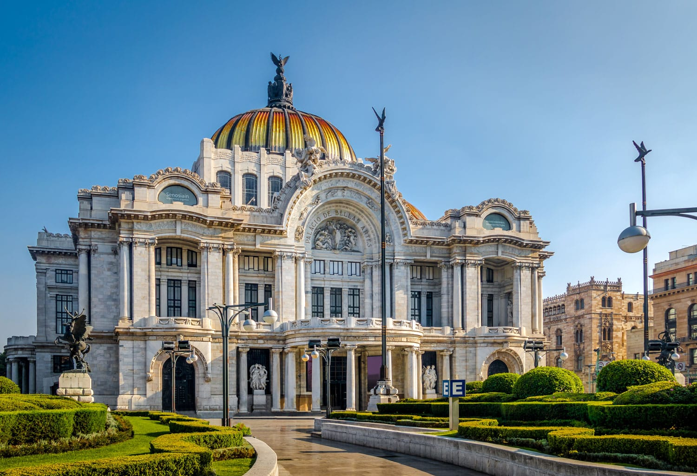

LUGARES TURISTICOS
1.Zócalo (Plaza Mayor)
Descripción: El corazón de la Ciudad de México. Es una de las plazas más grandes del mundo y rodeada de importantes edificios históricos como la Catedral Metropolitana y el Palacio Nacional.
Qué hacer: Visitar la Catedral, caminar por la plaza, ver el Palacio Nacional, y si es temporada, disfrutar de eventos culturales.
2. Palacio de Bellas Artes
Descripción: Un edificio icónico que alberga una de las más importantes salas de conciertos y museos de arte en el país.
Qué hacer: Disfrutar de una función de ballet, ópera o simplemente admirar los murales de Diego Rivera, Orozco y Siqueiros.
3. Chapultepec
Descripción: Uno de los parques urbanos más grandes de América Latina, y cuenta con el Castillo de Chapultepec, museos, lagos y zonas de recreo.
Qué hacer: Visitar el Castillo, recorrer el Bosque de Chapultepec, y el Museo Nacional de Historia.
4. Museo Nacional de Antropología
Descripción: Considerado uno de los museos más importantes del mundo, alberga la mayor colección de artefactos prehispánicos de México.
Qué hacer: Ver la famosa Piedra del Sol (Calendario Azteca), y otras piezas representativas de las culturas indígenas.
5. Coyoacán
Descripción: Un barrio tradicional, bohemio y lleno de historia. Aquí se encuentra la Casa Azul, la antigua residencia de Frida Kahlo y Diego Rivera.
Qué hacer: Visitar la Casa Azul, recorrer el centro histórico, disfrutar de la comida en los cafés y restaurantes del lugar.
